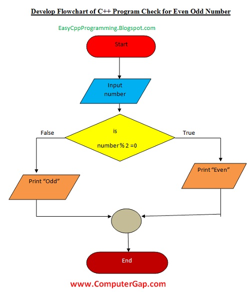

Programming languages are essential tools used to write software that runs on computers and digital devices. They allow developers to create instructions that a computer can follow to perform specific tasks. From system software like operating systems to mobile applications, all rely on programming languages. These languages range from low-level machine codes to high-level, human-readable formats that simplify development. Understanding programming languages is the first step toward mastering the art of coding, which powers much of the technology around us.
Qualities of a Good Program
A good program is one that effectively solves the intended problem while maintaining code simplicity and performance. It should be reliable, efficient, easy to understand, and maintainable. Moreover, a quality program must be adaptable to various environments and be secure to protect against vulnerabilities. Portability, robustness, and clarity are key attributes that ensure the program's success in real-world applications. Below are the essential qualities every well-designed program should have:
Correctness
Efficiency
Readability
Maintainability
Portability
Robustness
Reusability
Security
Types of Programming Languages
Programming languages are categorized based on their level of abstraction from machine hardware. They include machine-level, assembly-level, and high-level languages. High-level languages like Python, Java, and C++ are closer to human languages and easier to learn, while low-level languages like Assembly provide more control over hardware but are harder to understand. Scripting, object-oriented, and procedural paradigms also define how programs are structured in each language.
Types of Programming Languages
Low-Level Languages
Low-level programming languages are closer to machine code and provide minimal abstraction from the computer's architecture.
They are typically divided into two types:
Machine Language
Machine language consists of binary code that is directly executed by the computer's hardware. It is the lowest level of programming and is machine-specific, meaning the program written in machine language is tailored to the specific type of processor it runs on. It is not human-readable and is challenging to work with.
Assembly Language
Assembly language uses human-readable mnemonics that correspond directly to machine language instructions. It is a step above machine language in terms of readability but still requires an understanding of the underlying hardware. It is faster than high-level languages but more difficult to code and maintain.
High-Level Languages
High-level programming languages are more abstract and easier to understand than low-level languages. They are designed to be more user-friendly and are portable across different types of hardware. Some examples include C, Python, Java, and JavaScript. They come in several generations:
Third-Generation Languages (3GL)
Third-generation languages, such as C and Java, are high-level languages that provide a significant level of abstraction from machine code. They allow programmers to write code that is more readable and portable across different systems, making them much easier to work with compared to assembly or machine language.
Fourth-Generation Languages (4GL)
Fourth-generation languages are closer to natural human language, aiming for simplicity and efficiency in programming. They allow developers to specify what the program should do rather than how to do it. Examples include SQL and MATLAB, which are used in database management and scientific computing.
Fifth-Generation Languages (5GL)
Fifth-generation languages focus on solving problems using constraints, and they are primarily used in artificial intelligence (AI). These languages allow developers to express problems in terms of logic and constraints, rather than explicitly stating the steps. Prolog and Mercury are examples of 5GL.
Language Translators
Language translators are programs that convert source code written in high-level programming languages into machine-readable code. There are three main types: assembler, compiler, and interpreter. Each of these translators has a specific role in transforming human-readable code into something that a computer can execute.
Assembler
An assembler is a program that converts assembly language code into machine code. It translates mnemonics and symbols into binary instructions that the computer's processor can understand and execute. Assembly language is often used for system programming and embedded systems, where direct control over hardware is necessary.
Compiler
A compiler is a program that translates a complete source code file written in a high-level language into machine code or an intermediate code all at once. The output is usually a binary executable file. This translation process happens before execution, and any errors are detected during compilation.
Interpreter
An interpreter is a program that translates and executes code line by line. Unlike a compiler, which translates the entire program at once, an interpreter works on the code incrementally, providing immediate feedback for errors. It is useful for dynamic languages like Python, where interactive execution is often required.
Difference Between Compiler, Interpreter, and Assembler
Aspect
Compiler
Interpreter
Assembler
Translation Method
Translates the entire code at once
Translates code line by line
Translates assembly language into machine code
Execution
Generates an executable file
Executes the program immediately
Produces binary code for hardware execution
Error Detection
All errors are detected during compilation
Errors are detected as the program runs
Errors are detected during assembly
Speed
Faster execution after compilation
Slower execution due to line-by-line translation
Fast execution for specific hardware
Example Languages
C, Java
Python, Ruby
Assembly Language
Syntax and Semantics
Syntax refers to the structure of statements in a programming language, including rules for forming valid expressions, declarations, and statements. Semantics, on the other hand, defines the meaning of these statements, describing the logic or behavior that occurs when the program is executed.
Errors and Types of Errors in Programming
Errors in programming are flaws or mistakes in the code that prevent it from executing properly. They are common during the development process and are classified into different types. Understanding and fixing these errors is a critical skill for any programmer.
Syntax Errors: Occur when code violates grammar rules of the programming language.
Semantic Errors: Code runs but does not produce the expected result due to logic flaws.
Runtime Errors: Occur during program execution, like dividing by zero or accessing invalid memory.
Logical Errors: Produce incorrect output due to wrong algorithms or conditions.
Compilation Errors: Detected by the compiler when source code cannot be converted to machine code.
Common Terminologies
Data Types: Classifications of data such as integer, float, char, and string used in programming.
Variable: A named storage location used to hold data that can be changed during program execution.
Constant: A value that cannot be altered once defined in a program.
Operands: The values or variables on which operations are performed.
Operators: Symbols that tell the compiler to perform specific operations like +, -, *, /.
Expression: A combination of variables, constants, and operators that yields a result.
Statement: A single line of code that performs an action, such as assignment or control flow.
Program Design Tools
Program design tools are aids like algorithms and flowcharts used to plan out the logic and steps before coding.
Algorithm
An algorithm is a finite sequence of logical steps written in a specific order to solve a particular problem. It is independent of programming languages and focuses on planning the logic clearly before implementation. Algorithms are essential in structuring thinking and building efficient solutions.
Rules for Writing an Algorithm
Start with a title and a clear description.
Begin with the word "Start" and end with "Stop".
Write each step clearly and concisely.
Steps should be numbered sequentially.
Use meaningful names for variables and operations.
Flowchart
A flowchart is a diagram that represents the logical flow of a program using symbols and arrows. It visually outlines the sequence of operations, decisions, and loops in a structured format. Flowcharts help in understanding, analyzing, and communicating program logic.
Flowchart Symbols
Terminator: Oval symbol used to represent Start and End points.
Process: Rectangle used to show processing tasks or actions.
Decision: Diamond shape used for branching conditions (Yes/No).
Input/Output: Parallelogram used to show input or output operations.
Arrows: Indicate the direction or flow of logic.
Example Flowcharts

C Programming Language
C is a high-level general-purpose programming language developed in the 1970s. It is known for its performance, simplicity, and powerful features like pointers and low-level memory access. It serves as the foundation for many modern languages such as C++, Java, and Python.
Features of C Language
Simple and easy to learn
Structured programming approach
Efficient and fast
Rich library support
Portable across platforms
Supports low-level memory access
Modular programming support
Extensive use of functions and recursion
Common Terminologies in C Language
Header Files: Files containing standard functions and macros (e.g., stdio.h).
Main Function: The entry point of every C program.
printf(): Function used to print output to the screen.
scanf(): Function used to take input from the user.
Variables: Containers for storing data values.
Data Types: Define the type of data (int, float, char).
Operators: Symbols used for operations (+, -, *, /).
Control Statements: Direct the flow of the program (if, for, while).
Control Structures in C
Control structures determine the flow of execution in a C program. They help in decision-making, looping, and branching based on conditions.
Conditional: if, if-else, nested if
Looping: for, while, do-while
Branching: switch, break, continue, goto
Arrays in C
An array in C is a collection of elements of the same data type stored in contiguous memory locations. It is used to store multiple values in a single variable name, making it easier to manage and access data through indexing. Arrays can be one-dimensional, two-dimensional (matrices), or multi-dimensional. For example, an array of integers can store the marks of 100 students efficiently using loops instead of separate variables.
QnAs
Q1: Write a program to find whether an input number is prime or not.
#include <stdio.h>
int main() {
int num, i, flag = 0;
printf("Enter a number: ");
scanf("%d", &num);
for (i = 2; i <= num / 2; ++i) {
if (num % i == 0) {
flag = 1;
break;
}
}
if (num == 1)
printf("1 is neither prime nor composite.");
else {
if (flag == 0)
printf("%d is a prime number.", num);
else
printf("%d is not a prime number.", num);
}
printf("\nRiwaj Nepal");
return 0;
}
Q2: Write a program to find the factorial of an input number.
#include <stdio.h>
int main() {
int n, i;
unsigned long long factorial = 1;
printf("Enter a number: ");
scanf("%d", &n);
if (n < 0)
printf("Factorial of a negative number doesn't exist.");
else {
for (i = 1; i <= n; ++i) {
factorial *= i;
}
printf("Factorial of %d = %llu", n, factorial);
}
printf("\nRiwaj Nepal");
return 0;
}
Q3: Write a program to check if the input number is a palindrome or not.
#include <stdio.h>
int main() {
int num, reversed = 0, remainder, original;
printf("Enter an integer: ");
scanf("%d", &num);
original = num;
while (num != 0) {
remainder = num % 10;
reversed = reversed * 10 + remainder;
num /= 10;
}
if (original == reversed)
printf("%d is a palindrome.", original);
else
printf("%d is not a palindrome.", original);
printf("\nRiwaj Nepal");
return 0;
}
Q4: Write a program in C to generate Fibonacci series for n terms.
#include <stdio.h>
int main() {
int n, t1 = 0, t2 = 1, nextTerm;
printf("Enter the number of terms: ");
scanf("%d", &n);
printf("Fibonacci Series: ");
for (int i = 1; i <= n; ++i) {
printf("%d ", t1);
nextTerm = t1 + t2;
t1 = t2;
t2 = nextTerm;
}
printf("\nRiwaj Nepal");
return 0;
}
Q5: Write a program in C to display whether the number is perfect or not.
#include <stdio.h>
int main() {
int num, sum = 0;
printf("Enter a number: ");
scanf("%d", &num);
for (int i = 1; i < num; i++) {
if (num % i == 0)
sum += i;
}
if (sum == num)
printf("%d is a perfect number.", num);
else
printf("%d is not a perfect number.", num);
printf("\nRiwaj Nepal");
return 0;
}